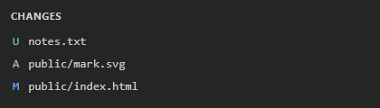
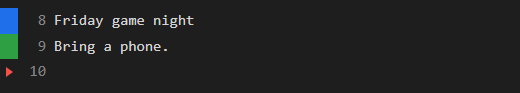
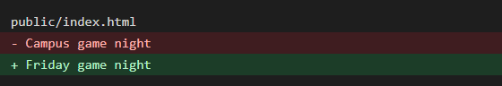
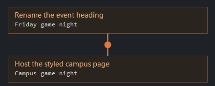

Chapter 7 of 18
See why the project needs Git
You deployed a page, then you replaced it. The link shows the new card. It does not show the first version. A team of developers shares these files. When two of them edit index.html, one save overwrites the other.
What you need
Source control means keeping a record of the files as they change. Git is the program that keeps that record on your computer. GitHub is a website that hosts a copy of the record so another person can download it. You can make commits with Git before you have a GitHub account. A commit does not upload anything.
Visual Studio Code and the terminal read the same repository. A commit you make with the check mark in the editor is the same commit git log would list. You do not import or sync the editor and the terminal. They are two doors into one history.
One heading, four places
The words below all describe one edit. In public/index.html the heading changes from Campus game night to Friday game night. The next two chapters do that edit on your computer. This chapter shows where the heading sits while you do it.
A repository is the project plus that history. The working tree is the files as they are right now. The staging area is the set of changes you have chosen for the next snapshot. A commit is one snapshot plus the message you wrote for it. A commit is stored on this computer. It does not upload the page, and it is not only a list of edited lines. The older snapshot is still there, so you can return to Campus game night later.
Git is the program that keeps the record. GitHub is a website. Your copy of the repository on GitHub will be named origin. That other copy is a remote. Most Git actions never leave this computer. Push, pull, and clone are the actions that talk to a remote.
The files on disk
Chosen for the next commit
Rename the event headingsnapshot on this computer
Rename the event headingthe same snapshot on GitHub
M index.html
- Campus game night
+ Friday game nightThe order you will follow
- Turn the folder into a repository. In Source Control, click Initialize Repository, or run
git initin the terminal. Both doors open the same record. The files do not move. Git has a history only after the first commit. You do that in the next chapter. - Edit the heading. The new text is in the working tree.
git statuslistspublic/index.html. The letter is M, because that file was committed before and has been edited since. - Read the changed lines before you keep them. Click the file in Source Control, or run
git diff. You should see Campus game night removed and Friday game night added. If the diff shows some other edit, leave that file out. - Stage the heading. Click the plus beside the file, or run
git add public/index.html. The staging area now holds that change and nothing you left unstaged. The next commit will match what you staged. - Commit. Write
Rename the event headingand click the check mark, or rungit commitwith that message. The snapshot is on this computer. The public link is unchanged. GitHub does not have this commit yet. - Send it. Push uploads commits to origin. Pull downloads commits that are on the remote and not on this computer. Sync pulls first, then pushes, which is what you want when another developer on the team has pushed while you were editing. Firebase still shows the old page until you deploy. Push and deploy are different.
Letters beside the file
Source Control and git status use the same three letters. U means untracked: Git has never saved that file. A means you staged a new file, so the next commit will add it. M means a file that already has a commit and has been edited since. The heading edit is an M. A new notes.txt that you have never committed is a U until you stage it, and then an A.

Colors in the gutter
The gutter is the strip just to the left of the line numbers. It marks the working tree against the last commit. Green marks a new line. Blue marks a changed line. A red arrow marks a deleted line. The Friday heading is a blue line if you rewrote the old heading. Bring a phone is green if that line is new. A red arrow on the next line means a line that used to be there is gone.

git diff prints the same fact as text. A minus line is what the last commit had. A plus line is what the working tree has now. In the editor, open the file from the Source Control list and you get the same two lines side by side.

Two snapshots, newest first
After you commit the heading, the history has two snapshots. The newer message sits above the older one. git log prints that list. The first snapshot still says Campus game night. The second says Friday game night and carries the message Rename the event heading. Neither snapshot is on GitHub until you push.

A second line of commits
A branch is a name for a line of commits. This project uses main. A feature branch is a second line. You commit Friday game night there, leave main on Campus game night, and merge the second line back when the heading is ready. The status bar in the editor shows the branch name. If two people edit the same lines, Git stops and writes conflict markers into the file. After the repository exists, you will put this heading on a branch named heading and then merge it.
Clone is the first download
Clone copies a repository you do not have yet, history included. A new developer on the team clones once. After that, pull brings in commits other people pushed. Sync is that pull, then your push. You do not clone again for each change, and you do not need a second remote command if you already published the branch from the editor.
Do not commit a password, a Firebase login token, or a service-account JSON file. Those are secrets. The .gitignore file in the next chapter keeps tool clutter out of the repository. It is not a place to hide a secret you already pasted into public.
Check your understanding
Choose an answer for each question.